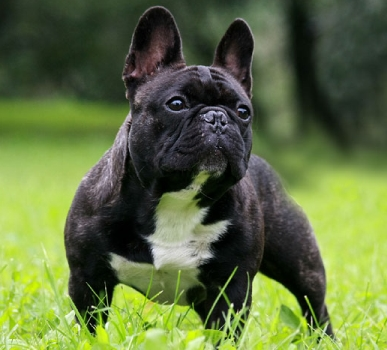

Бульдог
Бульдог —одна з найяскравіших і найвідоміших європейських бойових порід, що проте зберегла вельми мало загального зі своїми лютими предками.Бульдог — істота настільки ж віддана, наскільки чуйна, собака співпереживає всьому, що відбувається в сім'ї і в будинку. Він, звичайно, готовий захищати господаря в разі небезпеки, бути супроводжуючим скрізь і завжди. І він же — це треба пам'ятати — погано переносить самоту і нестачу спілкування. Втім, світову славу і честь вважатися талісманом багатьох спортивних клубів йому принесла знаменита упертість, тому при дресируванні не слід зневірюватися, спостерігаючи повільне утворення навички.